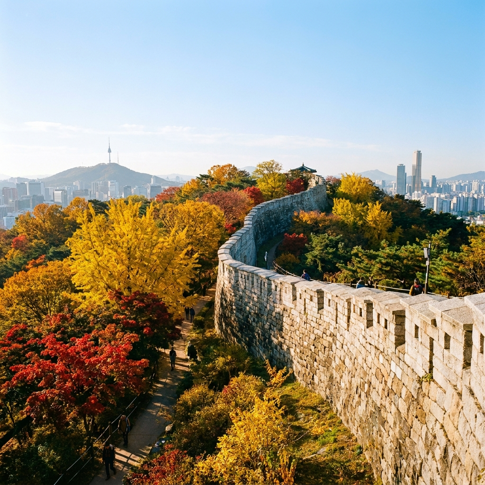
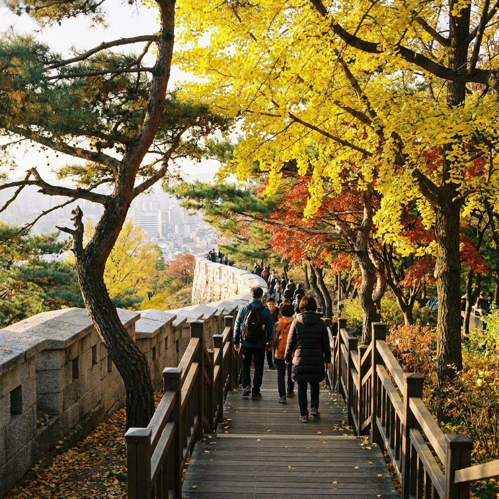
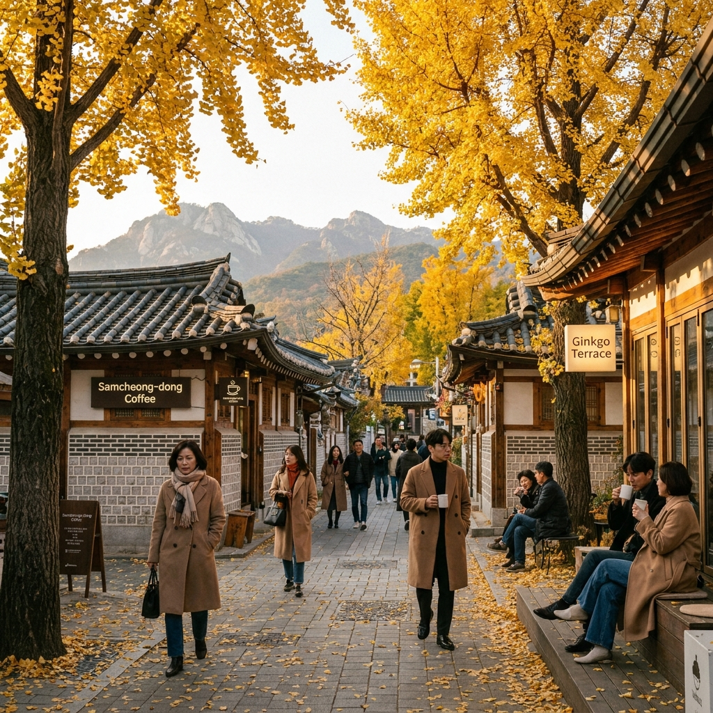

서울 북악산 성곽길 10월 단풍 산책과 삼청동·북촌 코스 — 한양도성 탐방로 출입 시간과 주차 팁
10월 도심 속 단풍 명소를 찾는다면 북악산 한양도성 성곽길이 가장 확실한 선택지입니다.
서울 도심 한가운데에서 울긋불긋 물든 숲과 600년 역사의 성곽 돌담, 그리고 파노라마처럼 펼쳐지는 서울 시내 전경을 동시에 누릴 수 있는 곳입니다. 성곽길을 걸은 뒤 삼청동 카페거리와 북촌 한옥마을로 자연스럽게 이어지는 코스는 가을 당일치기 나들이로 더할 나위 없습니다. 출입 가능 시간과 입구별 경사도 차이, 대중교통 환승 정보를 사전에 파악하면 한결 여유로운 탐방이 가능합니다.

10월 단풍으로 물든 북악산 한양도성 성곽길 전경 / AI 제작 이미지
01 | 10월 도심 속 가을 정취, 북악산 한양도성 탐방로 개요
서울 종로구와 성북구 경계에 솟아 있는 북악산(백악산, 해발 342m)은 조선 왕조의 주산으로 오랜 세월 수도 한양을 품어온 명산입니다.
과거 군사 보호 구역으로 지정되어 일반인의 출입이 엄격히 통제되었던 역사 덕분에, 북악산 내부의 숲은 도심 속이라고 믿기 어려울 만큼 울창하고 원형 그대로의 식생을 간직하고 있습니다.
특히 10월 중순부터 하순으로 접어드는 시기에는 참나무 군락과 단풍나무들이 노랗고 붉게 물들며 성곽의 화강암 성돌과 눈부신 조화를 이룹니다.
탁 트인 능선길에 올라서면 경복궁과 광화문 빌딩 숲, 저 멀리 남산 N서울타워까지 한눈에 조망할 수 있어 서울에서 가장 아름다운 가을 산책 코스로 손꼽힙니다.
최근 청와대 뒤편 남측 탐방로까지 전면 개방되면서 진입로가 다양해져 체력과 일정에 맞춰 자유롭게 코스를 설계할 수 있게 되었습니다.
02 | 북악산 성곽길 출입 안내소 위치와 입산 시간 기준
북악산 한양도성 탐방로는 문화재 보호 및 산불 예방, 안전 관리를 위해 계절별로 입산 및 퇴산 시간이 엄격하게 운영됩니다.
가을철인 10월은 하절기 운영 시간이 적용되어 오전 9시부터 오후 6시까지 개방되지만, 마지막 입산 마감 시각은 오후 4시라는 점을 반드시 기억해야 합니다.
오후 4시 이후에 도착하면 안내소 출입문이 닫혀 탐방을 시작할 수 없으므로 여유 있게 1~2시간 전에 도착하는 것이 좋습니다.
신분증 지참 의무는 수년 전 폐지되었으므로 안내소에서 별도의 표찰 교환이나 개인정보 작성 없이 자유롭게 통과할 수 있습니다.
⏰ 북악산 한양도성 탐방로 운영 시간 안내
• 3월 ~ 10월 (하절기/가을철): 개방 시간 09:00 ~ 18:00 (입산 마감 16:00)
• 11월 ~ 2월 (동절기): 개방 시간 09:00 ~ 17:00 (입산 마감 15:00)
• 입장료: 무료
• 주요 안내소: 창의문 안내소(자하문 고개), 말바위 안내소(삼청공원 방면), 춘모암 안내소, 숙정문 안내소
03 | 창의문 코스 vs 말바위 코스 난이도와 경사 비교
북악산 성곽길 종주는 크게 창의문에서 출발해 말바위로 내려가는 코스와, 반대로 말바위에서 출발해 창의문으로 내려가는 코스로 나뉩니다.
어느 쪽을 시작점으로 잡느냐에 따라 체력 소모와 경사도가 완전히 달라지므로 동행자의 체력을 고려해 결정해야 합니다.
| 비교 항목 |
창의문 출발 코스 (서쪽 → 동쪽) |
말바위 출발 코스 (동쪽 → 서쪽) |
| 출발 지점 |
부암동 창의문 안내소 |
삼청공원 / 말바위 안내소 |
| 오르막 경사도 |
매우 가파름 (급경사 나무 계단 연속) |
완만함 (능선 흙길 및 데크 계단) |
| 백악마루까지 시간 |
약 35분 ~ 45분 (심장 강화 코스) |
약 50분 ~ 1시간 (완만한 오르막) |
| 하산 시 무릎 부담 |
말바위 방면 하산으로 무릎 부담 적음 |
창의문 급경사 계단 하산으로 무릎 주의 |
| 추천 대상 |
계단 운동을 선호하는 등산객 |
완만한 가을 단풍 산책을 원하는 나들이객 |
초보자나 무릎 관절을 보호하고 싶은 분이라면 삼청공원 또는 혜화문 쪽에서 출발해 말바위 안내소를 거쳐 백악마루로 올라가는 동쪽 출발 코스를 적극 추천합니다.
창의문 쪽은 계단 경사가 거의 45도에 육박하는 급경사 데크가 이어지므로 숨이 찰 수 있지만, 대신 단시간에 정상에 오를 수 있는 장점이 있습니다.

북악산 능선길을 따라 이어진 성곽 데크와 단풍 숲길 / AI 제작 이미지
04 | 백악마루 정상에서 바라본 서울 도심 단풍 파노라마
북악산의 최고봉인 백악마루(342m) 표지석에 도달하면 감탄을 자아내는 서울 도심 파노라마가 눈앞에 펼쳐집니다.
조선 시대 한양도성의 북쪽 중심축이었던 만큼, 발아래로 경복궁의 근정전과 광화문 광장이 일직선으로 내려다보입니다.
청명한 가을 하늘 아래 빌딩 숲과 고궁의 기와지붕, 그리고 인왕산과 남산으로 이어지는 능선이 오색 단풍으로 둘러싸여 환상적인 장관을 이룹니다.
백악마루 인근에는 1968년 1·21 사태의 흔적이 고스란히 남아 있는 1·21 사태 소나무도 자리 잡고 있습니다.
수십 개의 총탄 자국이 붉은 페인트로 표시되어 있어 걷는 이들에게 역사의 무게와 평화의 소중함을 되새기게 합니다.
05 | 청와대 뒤편 개방 탐방로 연계 산책 동선
과거에는 성곽 능선길 외에 다른 하산로가 제한적이었으나, 청와대 개방과 함께 조성된 청와대 뒤편 남측 탐방로는 북악산 나들이의 매력을 배가시킵니다.
백악쉼터나 백악마루에서 청와대 방면으로 이어지는 산책로는 경사가 완만하고 키 큰 소나무 숲길이 잘 보존되어 있어 삼림욕을 즐기기에 안성맞춤입니다.
남측 탐방로를 따라 내려오면 칠궁(七宮) 뒷길이나 춘추관 인근 삼청동 입구로 바로 연결됩니다.
따라서 북악산 정상에서 단풍을 감상한 뒤 남측 코스로 내려와 곧바로 삼청동 상권으로 진입하는 동선이 가장 효율적입니다.
06 | 북악산 탐방로 주변 공영주차장 위치와 대중교통 접근법
북악산 주변은 주택가와 문화재 보호구역이 인접해 있어 주차 공간이 매우 협소하고 단풍철 주말에는 극심한 정체가 발생합니다.
가급적 대중교통을 이용하는 것이 현명하며, 부득이하게 자차를 이용할 경우 인근 공영주차장 위치를 숙지해야 합니다.
| 주차장 명칭 |
위치 및 주요 특징 |
기본 요금 (5분당 / 시간당) |
| 정독도서관 공영주차장 |
삼청동 진입로 인접, 나들이 명당 |
5분당 250원 (1시간 3,000원) |
| 국립현대미술관 서울 주차장 |
삼청로 초입, 주차 공간 비교적 쾌적 |
최초 1시간 4,200원 (추가 10분당 700원) |
| 신교공영주차장 |
자하문로 방면 (창의문 이동 시 유용) |
5분당 250원 (1시간 3,000원) |
대중교통 이용 시 꿀팁:
• 창의문 방면 접근: 지하철 3호선 경복궁역 3번 출구 앞 버스정류장에서 초록색 지선버스(7022, 7212, 1020번) 탑승 후 자하문고개·윤동주문학관 정류장 하차 (약 8분 소요).
• 삼청공원·말바위 방면 접근: 지하철 3호선 안국역 2번 출구 또는 경복궁역에서 종로02번 마을버스를 타고 성균관대 후문이나 삼청공원 입구에서 하차.

북악산 하산 후 이어지는 삼청동 가을 골목길과 한옥 풍경 / AI 제작 이미지
07 | 삼청동 카페거리와 북촌 한옥마을 가을 산책 연계 팁
북악산 성곽길 탐방을 마쳤다면 말바위 쉼터에서 삼청공원을 거쳐 삼청동 카페거리로 자연스럽게 발걸음을 옮겨보세요.
삼청동길은 은행나무 가로수가 황금빛 터널을 이루는 가을 대표 데이트 코스입니다.
아기자기한 갤러리와 고즈넉한 한옥을 개조한 베이커리 카페, 따뜻한 삼청동 수제비 등 맛집들이 밀집해 있어 등산으로 소모된 에너지를 채우기에 제격입니다.
삼청동 골목길에서 계단을 따라 조금만 올라가면 북촌 8경으로 유명한 북촌 한옥마을의 돌담길로 이어집니다.
기와지붕 사이로 비치는 노을과 가을 낙엽이 어우러진 풍경은 도심 속에서 느낄 수 있는 최고의 힐링을 선사합니다.
08 | 성곽길 산책 시 복장 준비물과 안전 수칙 체크리스트
북악산은 해발 고도가 높지 않지만, 성곽을 따라 설치된 계단 코스가 가파르고 돌길이 많아 방심하면 발목 부상을 입을 수 있습니다.
🎒 북악산 가을 탐방 필수 체크리스트
1. 신발: 바닥 접지력이 좋은 트레킹화나 밑창이 두꺼운 운동화 필수 (구두나 슬리퍼 절대 금지)
2. 복장: 산 위는 바람이 많이 불고 일교차가 크므로 가벼운 바람막이나 얇은 외투 덧입기
3. 음료: 산 내부에 자판기나 매점이 없으므로 출발 전 생수 1병(500ml) 이상 준비
4. 스틱 주의: 성곽길 목재 데크 훼손 방지를 위해 등산스틱에 고무마개를 반드시 착용할 것
5. 안전 수칙: 문화재인 성곽 돌담에 기대거나 올라타는 행위 금지, 지정된 탐방로만 이용
09 | 북악산 성곽길 단풍 나들이 추천 하루 일정표
알찬 하루를 보낼 수 있는 10월 북악산 및 삼청동 당일치기 코스 시간표를 제안합니다.
| 시간대 |
일정 및 이동 동선 |
활동 내용 및 포인트 |
| 10:00 ~ 10:30 |
경복궁역 집결 및 버스 이동 |
경복궁역 3번 출구 → 자하문고개·윤동주문학관 하차 |
| 10:30 ~ 12:30 |
창의문 안내소 → 백악마루 → 말바위 |
북악산 성곽길 단풍 감상, 서울 전경 조망, 1·21 소나무 관람 |
| 12:30 ~ 13:00 |
삼청공원 방면 하산 |
숲길을 따라 삼청공원으로 하산 및 삼청동길 진입 |
| 13:00 ~ 14:30 |
삼청동 점심 식사 |
삼청동 수제비 또는 한식 다이닝에서 따뜻한 식사 |
| 14:30 ~ 16:30 |
삼청동 카페 & 북촌 한옥마을 산책 |
한옥 카페 티타임, 북촌 돌담길 단풍 감상 및 포토존 촬영 |
| 16:30 ~ 17:00 |
안국역 이동 및 귀가 |
지하철 3호선 안국역으로 이동하여 일정 마무리 |
#북악산성곽길
#북악산단풍
#한양도성탐방로
#삼청동가을나들이
#북촌한옥마을
#서울단풍명소
#창의문안내소
#말바위쉼터
#서울가을산책
#도심트레킹코스